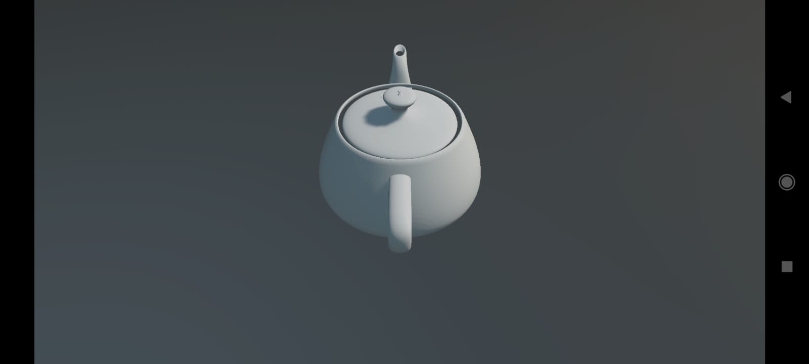
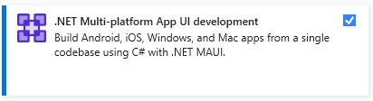
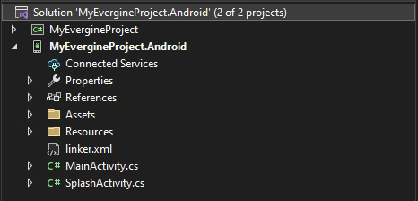

Android

Evergine runs on Android through .NET for Android (net10.0-android), renders with Vulkan and plays audio with OpenAL. Three templates target Android: a phone and tablet launcher, and two OpenXR launchers for the Meta Quest and Pico standalone headsets. All three share your application project with the Windows launcher, so the scene you edit in Evergine Studio is the one that runs on the device.
Templates
| Template | Profile | Minimum Android version | Extra packages | Entry activity |
|---|---|---|---|---|
| Android | Android |
API 21 (SupportedOSPlatformVersion 21) |
None | SplashActivity, which opens MainActivity |
| Android Meta Quest (OpenXR) | Quest |
API 23 | Evergine.OpenXR, Evergine.OpenXR.Natives.Quest |
MainActivity |
| Android Pico (OpenXR) | Pico |
API 23 | Evergine.OpenXR, Evergine.OpenXR.Natives.Pico |
MainActivity |
Every Android launcher references Evergine.Android (window system), Evergine.Vulkan (graphics), Evergine.OpenAL (audio), Evergine.Targets and Evergine.Targets.Android (asset export), and the native Bullet library Evergine.LibBulletc.Natives.
Important
The project builds for API 21, but Vulkan is only part of Android from Android 7.0 (API 24), and it also needs a GPU driver that exposes it. On older devices or on devices without Vulkan, the application installs but cannot create its graphics device. The Quest and Pico manifests declare android.hardware.vulkan.level and android.hardware.vulkan.compute as required features so that stores filter out unsupported hardware.
Add Android to a project when you create it in Evergine Launcher, or later from Settings > Project Settings in Evergine Studio (see Manage profiles).
Prerequisites
The .NET 10 SDK with the Android workload:
dotnet workload install androidThe Android SDK and a Java JDK. The easiest way to get both is the .NET Multi-platform App UI development workload in the Visual Studio 2026 installer, which also installs the Android workload and an emulator:

Without Visual Studio, follow Microsoft's .NET for Android installation guide.
Project structure
Adding the Android profile creates a solution with your application project and one launcher project, <Project>.Android:

| File | Purpose |
|---|---|
MainActivity.cs |
Creates the application, the surface, the Vulkan context and the audio device, and runs the loop. |
SplashActivity.cs |
Launcher activity of the phone template. Shows the splash theme, then starts MainActivity with a fade. |
Resources/layout/Main.axml |
A full-screen RelativeLayout with the id evergineContainer. The Evergine surface is added to it at runtime, so you can place native Android views on top. |
AndroidManifest.xml |
Application manifest. The XR templates add the headset metadata, required features and permissions here. |
linker.xml |
Types the trimmer must keep because Evergine creates them by reflection: asset loaders and importers, binding attributes and the default services. |
<Project>.Android.csproj |
Target framework, minimum API and package references. |
The launcher project file of the phone template:
<Project Sdk="Microsoft.NET.Sdk">
<PropertyGroup>
<TargetFramework>net10.0-android</TargetFramework>
<SupportedOSPlatformVersion>21</SupportedOSPlatformVersion>
<OutputType>Exe</OutputType>
<Nullable>enable</Nullable>
<ImplicitUsings>enable</ImplicitUsings>
<ApplicationId>com.companyname.MyProject.Android</ApplicationId>
<ApplicationVersion>1</ApplicationVersion>
<ApplicationDisplayVersion>1.0</ApplicationDisplayVersion>
</PropertyGroup>
<ItemGroup>
<PackageReference Include="Evergine.Android" Version="..." />
<PackageReference Include="Evergine.Vulkan" Version="..." />
<PackageReference Include="Evergine.OpenAL" Version="..." />
<PackageReference Include="Evergine.Targets" Version="..." />
<PackageReference Include="Evergine.Targets.Android" Version="..." />
<PackageReference Include="Evergine.LibBulletc.Natives" Version="..." />
</ItemGroup>
<ItemGroup>
<ProjectReference Include="..\MyProject\MyProject.csproj" />
</ItemGroup>
<ItemGroup>
<LinkDescription Include="linker.xml" />
</ItemGroup>
</Project>
Change ApplicationId before you publish: it is the package name that identifies your app on the device and in the store.
MainActivity walkthrough
This is the MainActivity of the phone template, with the project name MyProject:
using Android.Content.PM;
using Android.Views;
using Evergine.Common.Graphics;
using Evergine.Common.Helpers;
using Evergine.Framework.Services;
using Evergine.Vulkan;
using System.Diagnostics;
using Display = Evergine.Framework.Graphics.Display;
using Surface = Evergine.Common.Graphics.Surface;
namespace MyProject.Android
{
[Activity(Label = "@string/app_name",
ConfigurationChanges = ConfigChanges.KeyboardHidden | ConfigChanges.Orientation,
ScreenOrientation = ScreenOrientation.Sensor,
LaunchMode = LaunchMode.SingleTask)]
public class MainActivity : global::Android.App.Activity
{
private SwapChain? swapChain;
private Evergine.Android.AndroidSurface? surface;
protected override void OnCreate(Bundle? savedInstanceState)
{
base.OnCreate(savedInstanceState);
// Full-screen window without a title bar.
this.RequestWindowFeature(WindowFeatures.NoTitle);
this.Window!.AddFlags(WindowManagerFlags.Fullscreen);
this.SetContentView(Resource.Layout.Main);
var application = new MyApplication();
// The window system wraps the activity and creates the native surface.
var windowsSystem = new global::Evergine.Android.AndroidWindowsSystem(this);
application.Container.RegisterInstance(windowsSystem);
this.surface = windowsSystem.CreateSurface(0, 0) as global::Evergine.Android.AndroidSurface;
this.surface!.OnSurfaceInfoChanged += this.Surface_OnSurfaceInfoChanged;
this.surface!.Closing += this.Surface_OnClosing;
this.surface!.OnScreenSizeChanged += this.Surface_OnScreenSizeChanged;
// Put the surface inside the layout container.
var view = this.FindViewById<RelativeLayout>(Resource.Id.evergineContainer);
view!.AddView(surface.NativeSurface);
// OpenAL audio device.
var audioDevice = new global::Evergine.OpenAL.ALAudioDevice();
application.Container.RegisterInstance(audioDevice);
Stopwatch clockTimer = Stopwatch.StartNew();
windowsSystem.Run(
() =>
{
// Vulkan needs a native window, which exists only once the surface is created,
// so the graphics context is configured here and not in OnCreate.
ConfigureGraphicsContext(application, surface);
application.Initialize();
},
() =>
{
var gameTime = clockTimer.Elapsed;
clockTimer.Restart();
application.UpdateFrame(gameTime);
application.DrawFrame(gameTime);
});
}
// Android destroys the native window when the app goes to the background and
// creates a new one when it returns. The swap chain must be rebuilt on the new window.
private void Surface_OnSurfaceInfoChanged(object? sender, SurfaceInfo surfaceInfo)
{
this.swapChain!.RefreshSurfaceInfo(surfaceInfo);
this.swapChain!.ResizeSwapChain(this.surface!.Width, this.surface!.Height);
this.surface!.OnScreenSizeChanged -= this.Surface_OnScreenSizeChanged;
this.surface!.OnScreenSizeChanged += this.Surface_OnScreenSizeChanged;
}
// Stop resizing while there is no window to present to.
private void Surface_OnClosing(object? sender, EventArgs e)
{
this.surface!.OnScreenSizeChanged -= this.Surface_OnScreenSizeChanged;
}
// Rotation and multi-window changes arrive here.
private void Surface_OnScreenSizeChanged(object? sender, SizeEventArgs e)
{
this.swapChain?.ResizeSwapChain(e.Width, e.Height);
}
private void ConfigureGraphicsContext(MyApplication application, Surface surface)
{
GraphicsContext graphicsContext = new VKGraphicsContext();
graphicsContext.CreateDevice();
var swapChainDescription = new SwapChainDescription()
{
SurfaceInfo = surface.SurfaceInfo,
Width = surface.Width,
Height = surface.Height,
ColorTargetFormat = PixelFormat.R8G8B8A8_UNorm_SRgb,
ColorTargetFlags = TextureFlags.RenderTarget | TextureFlags.ShaderResource,
DepthStencilTargetFormat = PixelFormat.D32_Float_S8X24_UInt,
DepthStencilTargetFlags = TextureFlags.DepthStencil,
SampleCount = TextureSampleCount.None,
IsWindowed = true,
RefreshRate = 60
};
this.swapChain = graphicsContext.CreateSwapChain(swapChainDescription);
this.swapChain.VerticalSync = true;
var graphicsPresenter = application.Container.Resolve<GraphicsPresenter>();
var firstDisplay = new Display(surface, this.swapChain);
graphicsPresenter.AddDisplay("DefaultDisplay", firstDisplay);
application.Container.RegisterInstance(graphicsContext);
}
}
}
Three details are specific to Android:
- The graphics context is created inside the load action of
windowsSystem.Run. The first callback runs once the native surface exists, which Vulkan needs to create the swap chain. - The surface can be replaced while the app is alive.
OnSurfaceInfoChangedfires with the new native window after the app returns from the background, and the swap chain is pointed at it withRefreshSurfaceInfo. LaunchMode.SingleTaskkeeps a single instance of the activity, so tapping the launcher icon again brings the running app back instead of starting a second Evergine application.
Meta Quest, Pico and Android XR
The three headset templates keep the same structure and change four things:
- OpenXR takes part in the creation of the Vulkan context. The template creates the
OpenXRPlatformfirst and callsInitializeForVulkan().VKGraphicsContextthen receives aVKGraphicsContextOptionswith the callbacks it returns,VK_KHR_multiview,VK_KHR_external_memory,VK_KHR_external_memory_fdandVK_KHR_get_memory_requirements2as device extensions, andVK_KHR_get_physical_device_properties2andVK_KHR_external_memory_capabilitiesas instance extensions. Android XR adds the Android hardware buffer extensions. - An
OpenXRPlatformowns the headset display. It is registered in the container, itsDisplayis added as"DefaultDisplay"and the surface becomes a"MirrorDisplay". The loop callsopenXRPlatform?.Update()beforeUpdateFrame. - The interaction profile and extensions depend on the vendor. The Quest template enables
XR_EXT_hand_tracking,XR_FB_hand_tracking_aimandXR_FB_hand_tracking_meshwithDefaultInteractionProfiles.OculusTouchProfile, and leaves passthrough extensions commented out. The Pico template enablesXR_EXT_hand_trackingwithDefaultInteractionProfiles.PicoNeo3Profile. The Android XR template asks for the hand tracking permission first, enables the hand extensions only when it is granted, and usesDefaultInteractionProfiles.KhronosSimpleProfile. - The manifest marks the app as XR. The Quest manifest adds the
com.oculus.intent.category.VRcategory and headset metadata; the Pico manifest addspvr.app.typewith the valuevr. The Android XR manifest requires an OpenXR runtime and starts the activity in full space. All of them request head tracking and the hand-tracking permission.
The XR section explains how to configure them: Meta Quest, Pico and Android XR.
Texture compression and shaders
The Android, Quest and Pico profiles export assets with these defaults:
| Setting | Default | Why |
|---|---|---|
| Non-alpha compression | ETC1_RGB8 |
Supported by practically every Android GPU and a quarter the size of 16-bit color. |
| Alpha compression | R4G4B4A4 |
ETC1 has no alpha channel, so textures with transparency use 16-bit color instead. |
| Compile effects | Yes | Shaders are compiled at export time, so the device does not compile HLSL at startup. |
| Directive combinations | LOW_PROFILE, GAMMA_COLORSPACE, shadow, point and spot light variants |
Precompiles the cheaper mobile variants of the standard effects. Quest and Pico also add MULTIVIEW_VI to render both eyes in one pass. |
You can change any of these per profile in Project Settings > Profiles, and override the format or size of individual textures in the texture editor.
Deploy and debug
Connect a device with USB debugging enabled (see Set up Android devices for debugging) or start an emulator (see Android emulator). Then:
Visual Studio. Open the solution with File > Open C# editor > Android in Evergine Studio, set
<Project>.Androidas the startup project, pick the device in the run target list and press F5.Command line. Build, install and launch with the
Runtarget:dotnet build .\MyProject.Android\MyProject.Android.csproj -t:Run -f net10.0-android
Tip
Emulators often expose Vulkan through a software or host-translated driver. Use them to check that the app starts, but measure performance and verify rendering on a real device.
For Meta Quest, enable developer mode on the headset first (see Meta's device setup guide); the headset then appears in the run target list like any other Android device.